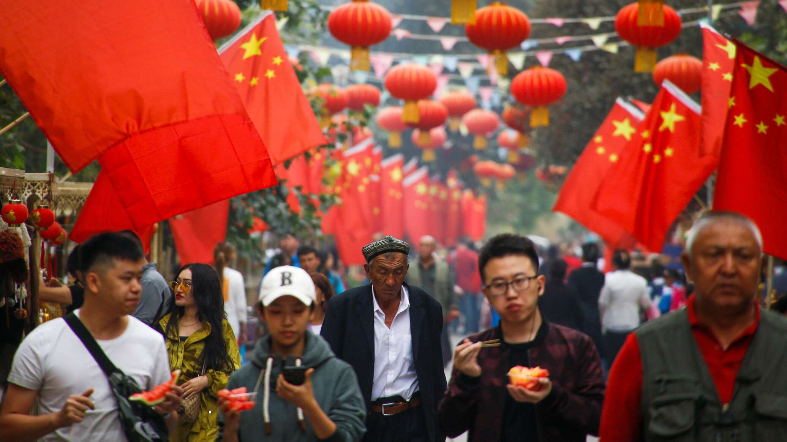
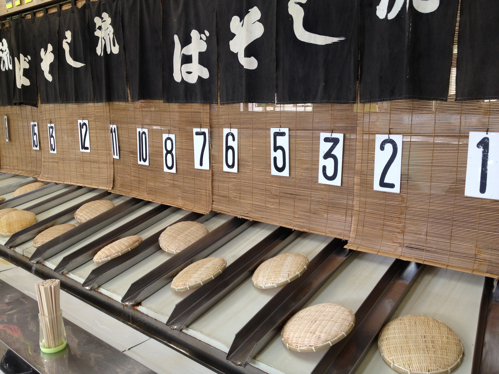
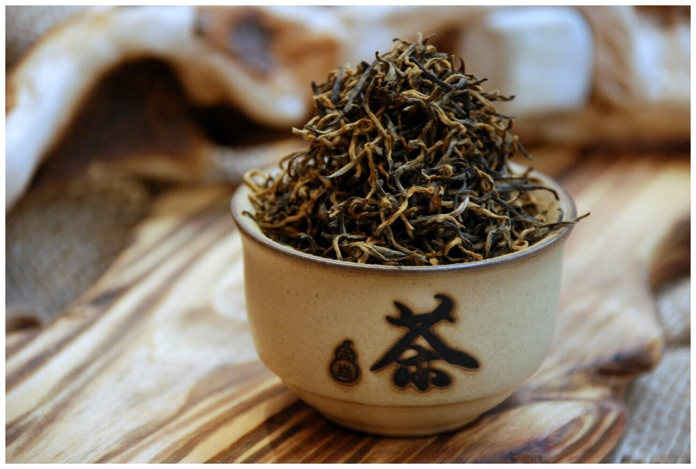

«Кто не поднялся на Великую китайскую стену, тот не настоящий герой»
Мао Цзэдун
Китай – это не просто точка на карте, а целая вселенная,
полная загадок и поражающих контрастов.
Китай манит своей грандиозностью, сложностью и
бесконечным потоком открытий. Готовы ли вы отправиться в
путешествие, чтобы разгадать тайны Поднебесной и увидеть
мир с совершенно новой перспективы?
Почему стоит посетить Китай?
Окунуться в многовековую культуру
Познакомиться с разнообразием природы
Отведать аутентичную и разнообразную кухню
Увидеть современные мегаполисы
Увидеть современные мегаполисы
Получить уникальный опыт
Интересные факты
На территории Китая находится одно из самых древних постоянных
поселений на планете, возраст которого насчитывает около 5000 лет.

Китай — самая густонаселенная страна мира: здесь проживает более 1,4
миллиарда человек, что составляет примерно 18% мирового населения
Китайский язык — самый распространенный язык в мире, им владеют более миллиарда людей. Его письменность
используется в Японии и Корее, а также считается одной из самых сложных.
Китай является родиной многих известных изобретений, таких как бумага, компас, порох и печатный станок.
Эти открытия оказали огромное влияние на развитие мировой цивилизации.

Китайцы не считают число «четыре» счастливым из-за его сходства с
иероглифом слова «смерть». Из-за этого в зданиях часто нет четвёртых
этажей.

Китай — крупнейший производитель и потребитель чая в мире. Чай
здесь начали выращивать более 3000 лет назад, а его употребление
глубоко укоренено в культуре.
Другие разделы сайта
Культура
Природа
История
Жизнь в Китае
Контактная информация
Диана Пономарева
Автор сайта, студентка ПМ-31 Вологодского государственного университета